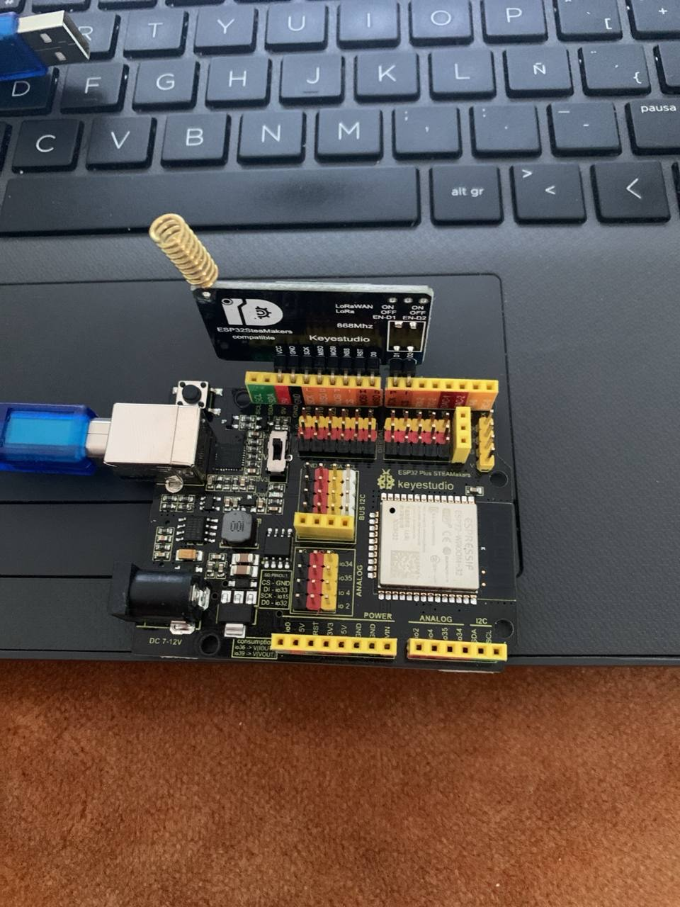
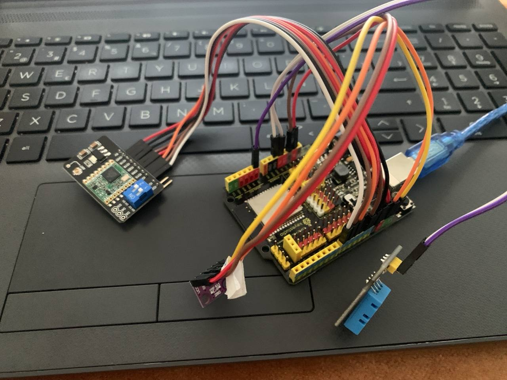
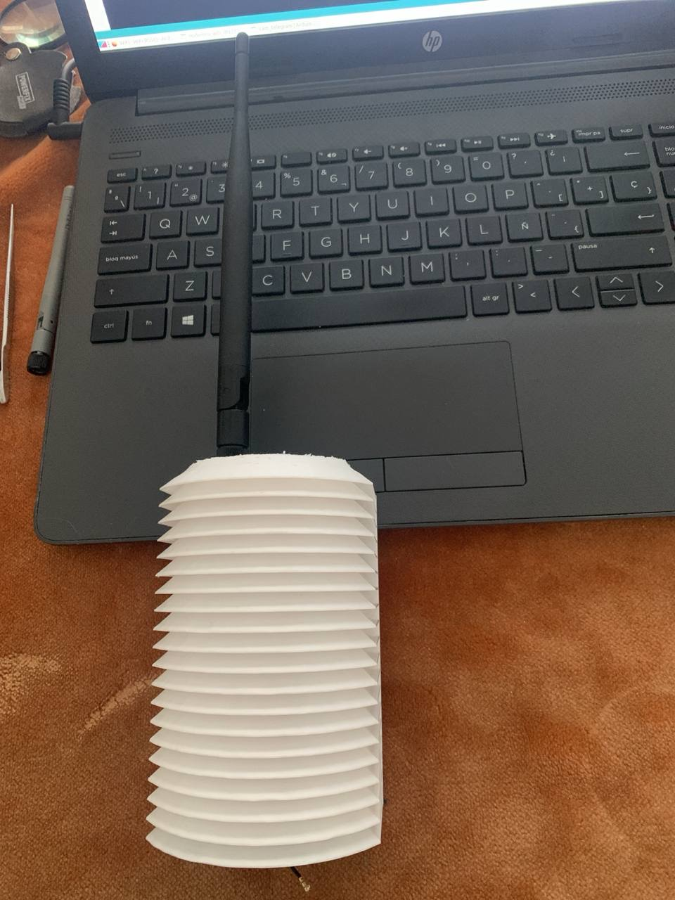

Comunicación Invernadero y base
El invernadero ha sido completamente automatizado y es controlado a través de comandos enviados por Telegram.
Previamente, hemos tenido que solucionar un gran problema de comunicación de la placa ubicada en el invernadero y la WiFi. A pesar de emplear diferentes tarjetas y diferentes antenas, la ESP32 no ha sido capaz de conectar adecuadamente con la WiFi del centro Andared_IoT (placas previamente dadas de alta para utilizar esta red). El problema es el alcance de la WiFi, la cual no alcanza a donde está localizado el invernadero. Para solucionar el problema se ha optado por utilizar la tecnología LoRa (de gran alcance y de muy bajo consumo). Hemos establecido una ESP32-1 base en el aula taller de tecnología y otra en el invernadero (ESP32-2). La primera conectada a la WiFi y a Telegram y la segunda enlazada con la primera a través de comandos internos enviados por Lora.
Ejemplo: se escribe /temperatura interior en telegram - > procesa ESP32-1 y envía orden al ESP32-2 vía LoRa -> Estación 2 toma medida de temperatura y envía a ESP32-1 vía LoRa el dato de temperatura pedido. Cuando el dato está disponible (escasos segundos) lo manda al Telegram. Todo esto es transparente al usuario y no sabe si quiera que hay dos estaciones.
|  |  |
ESP32-1 (a la izquierda) y ESP32-2 (a la derecha). Ambas dotadas de una tarjeta LoRa. A la segunda se le ha dotado de una antena externa para lograr una mayor ganancia.
Por otro lado, hemos instalado una ESP32-CAM, otra tarjeta que integra una pequeña cámara que ofrece la posibilidad de tomar una instantánea con una calidad razonable. Además, se puede controlar un diodo LED de alta luminosidad para iluminar el espacio y poder tomar fotografías incluso con escasez de luz natural. Recordemos que el invernadero es de unos 3x2 m. Esta tarjeta tiene conector IPEX y se le ha podido acoplar una antena exterior tras practicar una minisoldadura en placa con soldador de aire.
.jpg) |
 |
El conjunto exterior se ha integrado en una estructura con buena ventilación y adecuada protección de los agentes meteorológicos. Se ha instalado la ESP32-2 y la ESP32-CAM, además de los sensores de exterior. Desde ahí sale un conjunto de cables y conectores al resto de la instalación y sensores interiores (motor ventilación, electroválvula, sensores interiores).